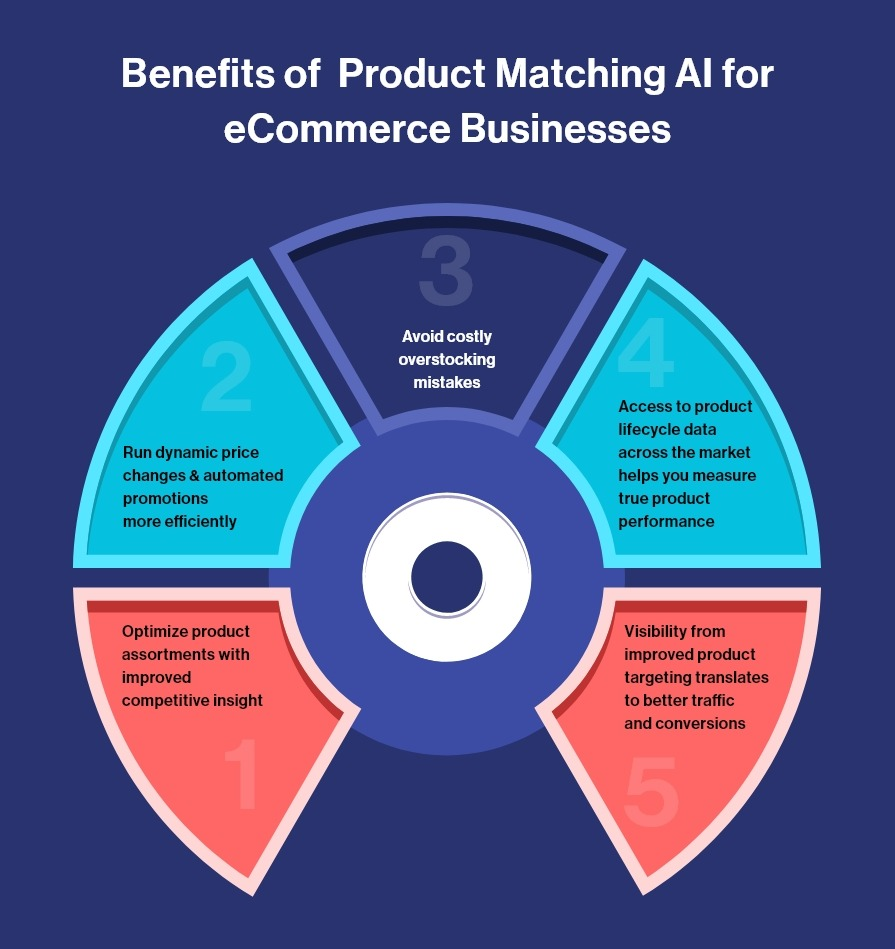

Unlock the power of AI to boost your business Operation.
Artificial intelligence (AI) is revolutionizing industries around the world, and Tanzania is no exception. From improving efficiency and decision-making to generating new revenue streams, the opportunities for businesses in Tanzania to leverage AI are endless. In this blog, we will explore the various ways in which AI can benefit businesses in Tanzania, including automating tasks, analyzing data, and optimizing processes. We will also discuss the potential challenges and considerations for implementing AI in a Tanzanian business context.
By understanding the potential of AI and how to effectively incorporate it into your business, you can unlock its full potential and stay ahead of the competition.
AI is one of the most profound technologies we are working on, as important or more than fire and electricity,” Sundar Pichai - CEO Google
Artificial intelligence (AI) is rapidly becoming an essential tool for businesses looking to stay competitive and drive growth. From automating tasks and processes to analyzing data and optimizing performance, AI has the potential to transform the way businesses operate. In Tanzania, companies have the opportunity to leverage AI to unlock new growth and efficiency opportunities. In this blog, we will explore the various ways in which AI can benefit businesses in Tanzania. We will examine how AI can be used to automate tasks and processes, analyze data, and optimize business performance. We will also discuss the challenges and considerations for implementing AI in a Tanzanian business context. By understanding the potential of AI and how to effectively incorporate it into your business, you can unlock its full potential and stay ahead of the competition
Automating tasks and processes.
Artificial intelligence (AI) has the ability to automate a wide range of tasks and processes, freeing up time and resources for businesses to focus on more important and value-adding activities. Some examples of tasks and processes that AI can automate include data entry, customer service, and supply chain management. For instance, AI-powered chatbots can handle customer inquiries, complaints, and other interactions, allowing businesses to provide round-the-clock support without the need for human intervention. Similarly, AI can be used to automate data entry and other administrative tasks, freeing up employees to focus on more complex and creative work. In the supply chain, AI can be used to optimize logistics, forecast demand, and optimize inventory levels, helping businesses to operate more efficiently and effectively. There are numerous benefits to automation with AI, including increased efficiency and cost savings. By automating tasks and processes, businesses can reduce the time and resources needed to complete them, freeing up employees to focus on more value-adding activities. Automation also helps to reduce the risk of human error, resulting in more accurate and reliable outcomes. In addition, AI can help businesses to scale their operations more easily, allowing them to meet growing demand without incurring additional costs. Overall, automation with AI has the potential to significantly enhance the performance of businesses in Tanzania.
Analyzing data.
One of the key benefits of artificial intelligence (AI) is its ability to analyze and make sense of large amounts of data. With the increasing volume and complexity of data being generated by businesses today, manual analysis is becoming increasingly time-consuming and error-prone. AI, on the other hand, can quickly and accurately process and analyze vast amounts of data, uncovering insights and patterns that may not be visible to the human eye. Businesses in Tanzania can leverage AI to analyze data in a variety of ways, such as identifying trends, predicting customer behavior, and optimizing marketing efforts. For example, AI can be used to analyze customer data to identify patterns and trends in their purchasing behavior, allowing businesses to tailor their marketing and sales efforts more effectively. AI can also be used to analyze financial data to identify opportunities for cost savings or to forecast future performance. There are many examples of businesses using AI to analyze data in order to make informed decisions. For instance, a retail company might use AI to analyze customer data and identify trends in their purchasing behavior in order to optimize their marketing efforts. A financial services company might use AI to analyze market data and predict future trends in order to inform investment decisions. Overall, AI has the potential to significantly enhance the ability of businesses in Tanzania to analyze and make sense of large amounts of data, enabling them to make more informed and strategic decisions.
Optimizing processes.
Artificial intelligence (AI) can be used to optimize a wide range of business processes, from marketing and sales to supply chain management and logistics. By analyzing data and identifying trends and patterns, AI can help businesses to streamline their processes and make them more efficient. For example, AI can be used to optimize marketing efforts by identifying the most effective channels and tactics for reaching target audiences. AI can also be used to personalize marketing messages and offers, increasing the likelihood of conversion. In sales, AI can be used to prioritize leads and identify the most promising opportunities, helping sales teams to be more effective and efficient. There are many examples of businesses using AI to optimize their processes. For instance, a marketing company might use AI to analyze data on customer behavior and preferences in order to identify the most effective channels and tactics for reaching their target audience. A sales organization might use AI to prioritize leads and identify the most promising opportunities, helping sales teams to be more efficient and effective.
Implementation challenges.
IImplementing artificial intelligence (AI) in a business can bring numerous benefits, but it is important to carefully consider the challenges and considerations involved. Some of the key challenges and considerations for implementing AI in a Tanzanian business context include:
1. Talent and skills: One challenge for businesses in Tanzania looking to implement AI is the availability of talent and skills. AI requires specialized knowledge and expertise, and it can be difficult to find qualified individuals with the necessary skills. Businesses may need to invest in training and development programs to build in-house expertise or hire external consultants to help with implementation.
2. Cost: Another consideration for businesses implementing AI is the cost. AI can be expensive to implement and maintain, especially if it requires specialized hardware or software. Businesses may need to allocate significant budget and resources to implement and support AI, which could impact their bottom line.
3. Data quality: The quality and availability of data is crucial for the success of AI. If the data used to train and operate AI systems is of poor quality or is incomplete, the results may be unreliable or inaccurate. Businesses implementing AI in Tanzania may need to invest in data cleaning and preparation efforts to ensure the quality of their data.
4. Legal and ethical considerations: There are also legal and ethical considerations to take into account when implementing AI in Tanzania. For example, businesses may need to ensure that their AI systems are compliant with privacy laws and that they do not discriminate against certain groups of people.
Conclusion.
In this blog, we have explored the various ways in which artificial intelligence (AI) can benefit businesses in Tanzania. We have seen how AI can be used to automate tasks and processes, analyze data, and optimize business performance. We have also discussed the challenges and considerations for implementing AI in a Tanzanian business context. Overall, the potential of AI for businesses in Tanzania is significant. By leveraging AI, businesses can improve their efficiency, make more informed decisions, and enhance their performance. If you are a business owner or leader in Tanzania, it is worth considering how AI could benefit your business and how you can effectively incorporate it into your operations. In conclusion, AI has the potential to revolutionize the way businesses operate and compete.
By understanding the benefits and challenges of implementing AI and taking a strategic approach to its adoption, businesses in Tanzania can unlock its full potential and stay ahead of the competition


3 Comments
Frasciscah Msisilwa Reply
AI can be a valuable tool for analyzing and making sense of large amounts of data, helping businesses to identify trends, predict customer behavior, and optimize their operations.
Jackson Reply
One of the key benefits of AI is its ability to automate tasks and processes, freeing up time and resources for businesses to focus on more important and value-adding activities.
Rohit Gulam Reply
AI has the potential to revolutionize the way businesses operate and compete. By leveraging its capabilities, businesses can improve efficiency, make more informed decisions, and enhance their performance.
Gift Msigwa Reply
While AI has the potential to bring numerous benefits to businesses, it is important to consider the legal and ethical implications of its use, particularly in terms of privacy and discrimination.
Samweli Lucas Reply
Implementing AI in a business context can be challenging, with considerations such as the availability of talent and skills, the cost of implementation, and the quality of data being important factors to consider.